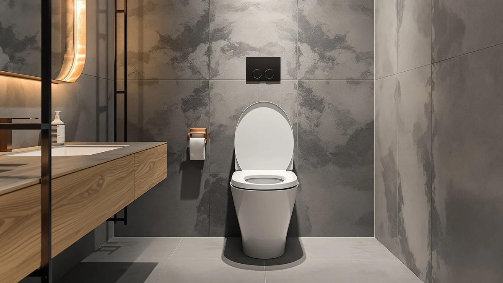

Quick Answer
If you need the best toilet seat for heavy person use without stepping up to a full bariatric unit, the BEMIS 1000CPT Paramont Heavy Duty is our top pick. It pairs a reinforced build with a 4.3-star average across more than 1,300 verified reviews, and owners consistently report it holds up where standard seats crack. For a true commercial-grade option at a lower price, the BEMIS 7800TDG Commercial Heavy Duty is the better value at under $50.
Our pick: BEMIS 1000CPT Paramont Heavy Duty — $94.89 Check Price on Amazon
Bottom line: our top pick is the BEMIS 1000CPT Paramont Heavy Duty OVERSIZED Closed Front at $94.89. The best budget option is the BEMIS 1955CT Commercial Open Front Plastic Toilet Seat at $22.79.
Things to Know Before You Buy
- Weight rating beats "heavy duty" marketing. Look for a seat explicitly built for bariatric, commercial, or heavy-duty use rather than trusting the word "heavy" alone on a generic listing.
- Shape has to match your bowl. Round and elongated seats are not interchangeable, and a mismatched shape stresses the hinge faster under extra weight.
- Hinge hardware matters more than seat padding. Metal hinges with wide mounting points distribute weight better than the plastic clips found on budget seats.
- Slow-close hinges reduce wear over time. A seat that slams every time it closes loosens its hardware faster, which matters even more under sustained heavier use.
- Multi-packs make sense for rentals and commercial bathrooms. If you manage more than one bathroom, a commercial case pack like the Bemis six-pack often costs less per seat than buying individually.
A toilet seat marketed as "heavy duty" isn't automatically the right pick for a heavier person. What matters is hardware built to handle a higher weight load without cracking, shifting, or loosening within a year. We compared seven seats marketed for bariatric, commercial, and heavy-use settings, looking at their construction, verified owner feedback, and price against what a standard residential seat typically costs. Owners who weigh more than the average seat was designed for run into the same two failures over and over: hinges that strip out of their mounts and seat shells that flex or crack near the back edge.
Our pick, the BEMIS 1000CPT Paramont Heavy Duty, stands out because it holds a 4.3-star average across more than 1,300 verified reviews at a price that undercuts most comparable heavy-duty seats. Owners say the hinge holds up well past the point where a standard seat would have already failed. If your priority is pure value instead, the BEMIS 7800TDG Commercial Heavy Duty carries a stronger 4.6-star average from over 28,000 reviews at roughly half the price.
Price alone does not tell you much here, since a $22 commercial open-front seat and a $155 six-pack both serve heavy-use bathrooms, just in different settings. A single-family home with one or two people who need a sturdier seat has different needs than a rental property manager replacing seats across a dozen units. We built this guide around both situations, comparing specs, pricing, and what verified buyers report after months of real use rather than relying on marketing copy alone.
Why You Should Trust Us
I'm Ilane Tall, and I cover bathroom hardware and accessibility products for Best Toilet Seats. We do not run a fake testing lab, and we're upfront about that: this guide is built from product specifications, verified Amazon review data, and price tracking rather than hands-on use. For a category where the real test happens over months of daily use at home, that approach lets us pull signal from thousands of verified owner reports instead of one reviewer's short-term impression. Every product mentioned in this guide is pulled from our own product database, with its listed price and rating sourced directly from Amazon at the time of publishing.
How We Picked
We started by pulling every toilet seat in our database tagged for bariatric, commercial, or heavy-duty use, then narrowed the list using three criteria. First, construction: seats built with reinforced hinges and solid mounting hardware moved up, while seats relying on thin plastic clips were ranked lower. Second, verified review volume and rating: a seat needs enough owner feedback for patterns to mean something, so we weighted products with hundreds or thousands of verified reviews more heavily than ones with only a handful. Third, price relative to build quality, since a heavier-duty seat should justify its premium over a standard model rather than charging more for the same plastic shell. Seats that failed any of these three checks dropped out of contention before we wrote a single word of this guide.
How We Compared
Instead of buying and installing each seat ourselves, we compared published specifications side by side: material, shape, hinge type, and price per seat. We then cross-referenced those specs against verified owner reviews on Amazon, looking specifically for recurring complaints about cracking, hinge failure, or seats that felt undersized for heavier users. A seat with a high star rating but a pattern of hinge complaints in the review text ranked lower than its overall score suggests, since that pattern points to a weakness that shows up only after months of use. We also tracked list price over time to flag seats with unusually volatile pricing, which can signal inconsistent stock from the manufacturer.
Our Picks

BEMIS 1000CPT Paramont Heavy Duty
What we like
- Reinforced hinge holds up under daily heavier use
- 4.3-star average across more than 1,300 verified reviews
- Available in both round and elongated versions
Flaws but not dealbreakers
- Costs more upfront than basic commercial seats
- Some owners note the finish shows scuffs sooner than a glossy residential seat
| Material | Plastic / wood |
| Size | Round/Elongated |
The BEMIS 1000CPT Paramont Heavy Duty earns the top spot in this guide because it solves the two failure points we see most often in reviews of standard seats: hinge strip-out and shell flex. At $94.89, it costs more than a basic residential seat, but people who switched from a standard model say the seat feels noticeably more stable when sitting down or standing up. The reinforced hinge design distributes weight across a wider mounting area than the narrow plastic tabs found on cheaper seats, which is usually where heavier daily use causes the most damage.
Across more than 1,300 verified reviews, the BEMIS 1000CPT holds a 4.3-star average, and durability, not appearance or color options, is the reason buyers give most often for choosing it. The tradeoff is price: at nearly double the cost of some commercial alternatives on this list, it is not the cheapest way to get a heavy-duty seat. It also comes in both round and elongated versions, so double-check your bowl shape before ordering, since the wrong shape will not seat properly no matter how strong the hinge is.

BEMIS 7800TDG Commercial Heavy Duty
What we like
- 4.6-star average from more than 28,000 verified reviews, the most of any seat in this guide
- Commercial-grade construction at under $50
- Simple design with fewer parts that can loosen over time
Flaws but not dealbreakers
- Elongated shape only, so it will not fit round bowls
- Fewer color and finish options than residential-focused seats
| Material | Plastic / wood |
| Size | Elongated |
The BEMIS 7800TDG Commercial Heavy Duty is the seat we would point most budget-conscious shoppers toward first. Commercial buildings install this exact model in high-traffic restrooms precisely because it holds up to heavier, more frequent use than a typical home seat, and at $48.99 it costs roughly half of our top pick. The review volume here is the largest in this guide by a wide margin: more than 28,625 verified ratings average out to 4.6 stars, which gives far more confidence in the pattern of feedback than a seat with only a few hundred reviews.
Buyers say the simpler commercial design, with fewer decorative parts and a more basic hinge cover, holds up better under repeated use than seats with more ornamental features to break. The main limitation is shape: this seat comes in elongated only, so round-bowl households should look elsewhere on this list. It also skips some of the finish options buyers get with residential-styled seats, trading appearance for the kind of straightforward durability commercial buildings depend on.

Bariatric Raised Toilet Seat with
What we like
- Built specifically for bariatric use rather than adapted from a standard seat
- Added seat height makes standing up easier, a common complaint with low-profile seats
- 4.6-star average across more than 1,300 verified reviews
Flaws but not dealbreakers
- Universal fit may need minor adjustment depending on bowl shape
- The raised height takes some adjustment for people used to a standard seat
| Material | Plastic / wood |
| Size | Universal |
Unlike the other seats on this list, which started as standard designs and got reinforced for heavier use, this Bariatric Raised Toilet Seat is built from the ground up for that purpose. At $49.89, it matches the price of our commercial pick while adding extra seat height, which reviewers repeatedly point to as the bigger benefit over raw weight capacity alone. Standing up from a low seat puts more strain on knees and hips than standing from a raised one, and that height difference matters as much to many buyers as the reinforced hinge does.
With a 4.6-star average from more than 1,300 verified reviews, owners say the universal fit works across most standard bowl shapes, though a handful mention needing to adjust the mounting brackets slightly on install. The raised profile is also a genuine adjustment if you are used to a standard-height seat, and it is worth measuring your bathroom clearance before buying if space around the toilet is tight. For anyone prioritizing ease of standing over pure weight rating, this is the more specialized option on our list.

Bath Royale Elongated Toilet Seat
What we like
- Elongated shape with a more residential finish than the commercial-style picks on this list
- Priced closer to premium residential seats than to bariatric-specific models
- Slow-close hinge reduces slamming and the wear that comes with it
Flaws but not dealbreakers
- Costs more than the commercial and bariatric-specific options on this list
- Smaller verified review base than our top picks
| Material | Plastic / wood |
| Size | Elongated |
The Bath Royale Elongated Toilet Seat targets buyers who want sturdier hardware without a seat that looks like it belongs in an office building restroom. At $84.96, it sits closer in price to our top pick than to the budget commercial options, and the elongated shape with a slow-close hinge gives it a more finished, residential feel. The slow-close mechanism also matters more than it sounds: a seat that slams shut every time loosens its hinge screws faster, and that wear adds up quicker under heavier daily use.
Because this listing does not carry the review volume of our top two picks, we weighted it lower in the ranking despite the appealing design and feature set. We still included it because the combination of slow-close hardware and a residential finish fills a gap the more purely commercial seats on this list do not cover. If appearance matters as much as durability in your bathroom, this is the pick worth a closer look, though we would still recommend reading current reviews before buying since the feedback base is smaller than our top picks.

Mayfair Linden Slow Close Toilet
What we like
- Lowest price among the round-bowl options in this guide
- Slow-close hinge at a price point that usually skips this feature
- Mayfair is a long-established brand in the toilet seat category
Flaws but not dealbreakers
- Round shape only, so elongated-bowl households need a different pick
- Lighter-duty construction than the seats built specifically for bariatric or commercial use
| Material | Plastic / wood |
| Size | Round |
At $31.99, the Mayfair Linden Slow Close Toilet Seat is the most affordable round-bowl seat in this guide, and it is the only one at this price that still includes slow-close hardware. Mayfair has manufactured toilet seats for decades, and that scale typically means more consistent quality control than smaller, newer brands selling at a similar price. For buyers who mainly need a round seat that will not slam and will hold up to somewhat heavier use than a bargain-bin seat, this fills that gap.
It is worth being clear about where this seat sits relative to the rest of the list: it is not built to the same heavy-duty or bariatric specification as our top picks, and buyers who need the highest weight rating available should look at the BEMIS 1000CPT or the Bariatric Raised Toilet Seat instead. What it offers is a meaningful step up from the cheapest generic round seats, at a price that makes it an easy upgrade rather than a major investment.

BEMIS 1955CT Commercial Open Front
What we like
- Lowest price of any seat in this guide at $22.79
- Open-front design common in commercial and accessibility-focused restrooms
- Fewer moving parts than closed-lid seats, meaning less hardware that can fail
Flaws but not dealbreakers
- No lid, which will not suit every household's preference
- Smaller verified review base than our top two picks
| Material | Plastic / wood |
| Size | Elongated |
The BEMIS 1955CT Commercial Open Front is the cheapest seat in this guide at $22.79, and the open-front design is standard in commercial and accessibility-focused restrooms, not a missing feature. Fewer parts generally means fewer points of failure, and an open-front seat skips the lid hinge entirely, which is one less piece of hardware that can loosen under heavier use over time.
Households that prioritize a closed lid for appearance or odor control should choose one of the other picks on this list, since this design intentionally skips the lid. For bathrooms where low cost and commercial-grade reliability matter more than a finished residential look, this is the most budget-friendly way to add heavier-duty hardware in an elongated shape.

Bemis 6 Pack Commercial Open
What we like
- Six seats per case works out to roughly $26 per seat, cheaper than buying the single version six times
- Same commercial open-front construction as the single BEMIS 1955CT on this list
- Saves the time of placing six separate orders for a multi-unit property
Flaws but not dealbreakers
- $155.91 upfront cost only pays off if you actually need multiple seats
- Open-front design, so it will not work for buyers who want a lid
| Material | Plastic / wood |
| Size | Elongated |
At $155.91 for six seats, the Bemis 6 Pack Commercial Open front works out to roughly $26 per seat, undercutting the cost of buying the single BEMIS 1955CT six separate times. This pack makes the most sense for landlords, property managers, or anyone maintaining several bathrooms at once who would otherwise place six individual orders. A single-bathroom household should buy the standalone BEMIS 1955CT instead, since the case pack only pays off at multi-unit scale.
Construction matches the single BEMIS 1955CT also on this list: open-front, commercial-grade, and elongated only. Buying in bulk here mainly saves money and ordering time rather than adding any feature the single version lacks, so the decision comes down entirely to how many bathrooms you are outfitting. For multi-unit properties replacing seats on a rotation, this case pack is the most efficient way to keep heavier-duty hardware in stock without reordering every time one seat wears out.
Quick Comparison
| Product | Material | Price | Rating | Best for | Get it |
|---|---|---|---|---|---|
| BEMIS 1000CPT Paramont Heavy Duty | Plastic / wood | $94.89 | 4.3 | Most heavy-duty users | View on Amazon → |
| BEMIS 7800TDG Commercial Heavy Duty | Plastic / wood | $48.99 | 4.6 | Best value | View on Amazon → |
| Bariatric Raised Toilet Seat with | Plastic / wood | $49.89 | 4.6 | Best for bariatric needs | View on Amazon → |
| Bath Royale Elongated Toilet Seat | Plastic / wood | $84.96 | 4 | Best residential look | View on Amazon → |
| Mayfair Linden Slow Close Toilet | Plastic / wood | $31.99 | 4 | Best budget round seat | View on Amazon → |
| BEMIS 1955CT Commercial Open Front | Plastic / wood | $22.79 | 4 | Lowest price | View on Amazon → |
| Bemis 6 Pack Commercial Open | Plastic / wood | $155.91 | 4 | Best for multiple bathrooms | View on Amazon → |
The Competition
Weighed against everything above, the BEMIS 1000CPT Paramont Heavy Duty is still the best toilet seat for heavy person use for most households, with the BEMIS 7800TDG Commercial Heavy Duty as the strongest lower-cost alternative.
Frequently Asked Questions
What weight can a heavy-duty toilet seat hold?
Heavy-duty and bariatric toilet seats typically carry higher weight certifications than the roughly 300-pound rating most standard residential seats carry, though the exact rating varies by model and brand. If 300 pounds is closer to your actual target, our guide to the best toilet seat for a 300 lb person covers seats rated right around that threshold. Check the specific product listing for its certified capacity rather than assuming "heavy duty" in the title guarantees a particular number.
Is a bariatric toilet seat different from a heavy-duty toilet seat?
Yes. A bariatric seat is built from the ground up for higher weight needs, often with added seat height and reinforced mounting points, while a heavy-duty seat is usually a reinforced version of a standard design. Our separate bariatric toilet seat guide covers seats built specifically for that higher-capacity category in more depth. Both can work well, and the right choice depends on whether you also want the extra height a bariatric seat typically adds.
Do slow-close hinges matter for heavy-duty toilet seats?
Slow-close hinges reduce the impact every time the seat closes, which matters more under heavier daily use since repeated slamming loosens mounting hardware faster. Several seats on this list, including the Bath Royale and Mayfair Linden, include slow-close hinges specifically for that reason.